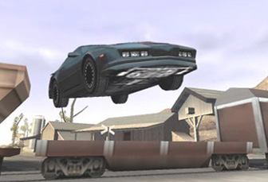

"Knight Rider" war eine Action-TV-Serie aus den USA, die von den Universal Studios in Los Angeles von 1982-1986 produziert wurde. Michael Knight (D. Hasselhoff) und K.I.T.T. (Ein Auto, das mit Künstlicher Intelligenz ausgestattet ist, eigenständig herumfahren und Entscheidungen treffen kann), kämpften für die Unschuldigen, die Hilflosen und die Machtlosen, in einer Welt voller Verbrechen...